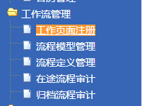
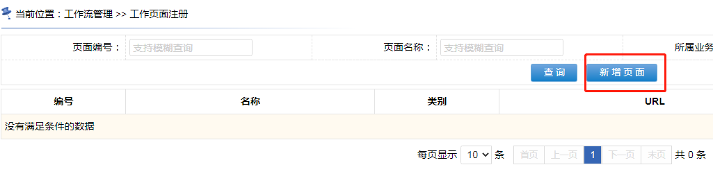

~~~~~~~~~~~~~~~~~~~~~~~~~~~~~~~~~~~~~~华丽的分割线~~~~~~~~~~~~~~~~~~~~~~~~~~~~~~~~~~~~~~~~~
点击菜单“工作流管理 >> 工作页面注册”

~~~~~~~~~~~~~~~~~~~~~~~~~~~~~~~~~~~~~~华丽的分割线~~~~~~~~~~~~~~~~~~~~~~~~~~~~~~~~~~~~~~~~~
 点击“新增页面”，在弹出页面中填写开发人员开发好的页面信息
~~~~~~~~~~~~~~~~~~~~~~~~~~~~~~~~~~~~~~华丽的分割线~~~~~~~~~~~~~~~~~~~~~~~~~~~~~~~~~~~~~~~~~

~~~~~~~~~~~~~~~~~~~~~~~~~~~~~~~~~~~~~~华丽的分割线~~~~~~~~~~~~~~~~~~~~~~~~~~~~~~~~~~~~~~~~~
两个节点的工作页面注册完成